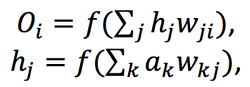

Sample image used in MNIST dataset for transfer learning
Synthesis of Starry Night and the Scream by Reverse Neural Net
The Reverse Neural Network is a network that can return back inputs. In the example of computer vision, where inputs represent pixels and outputs are categorizations of pictures and scenes, the reverse neural network can return back whole images based on the selected categorization. The concept involves training inputs rather than training weights and is coded in Java from scratch.
The reverse neural network project was a result of my interest and progression in vanilla neural networks. I built a multilayer perceptron with a logistic activation function and back propagation in Java from scratch and initially formatted the network to accept binaries, grayscale images, and then color images. I was thinking that it would be really cool if I could implement some sort of creativity into the network because I wanted to think past neural nets as a universal function approximator. To be honest, I really just wanted to create cool images. Retrospectively, I think I need to use that sort of driving motivation and thinking to solve problems and implement more psychological and neurological concepts as computational structures and algorithms.
where f(x) is the activation function, O is output activation, h is hidden activation, w is weight, and a is input. K is number of input node, j is #hidden node, and i is #output node. I tried to think of ways to achieve a perfect solution and somehow calculate the inputs from the weights. With the simplest base case of 1 input node, 1 hidden node, and 1 output node, it is possible to back-calculate the inputs given the weights and desired outputs by using the inverse of the activation function: